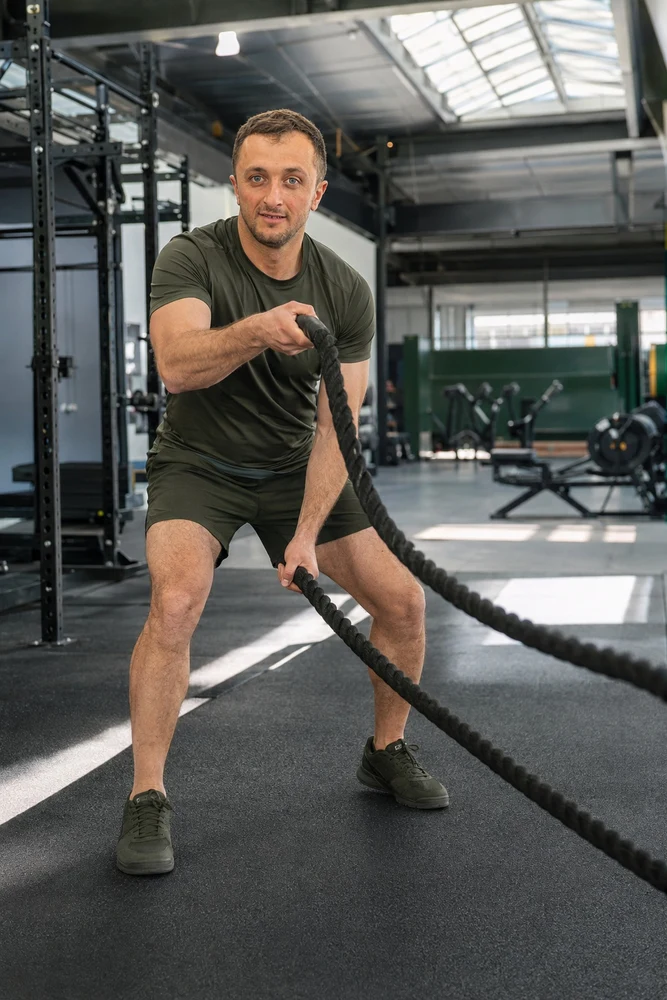
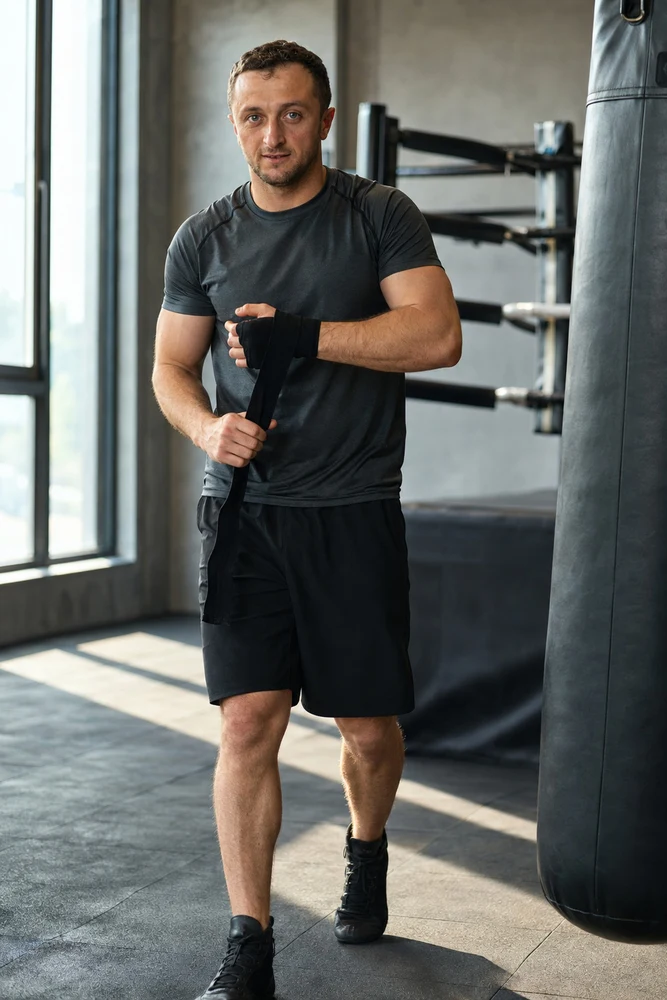
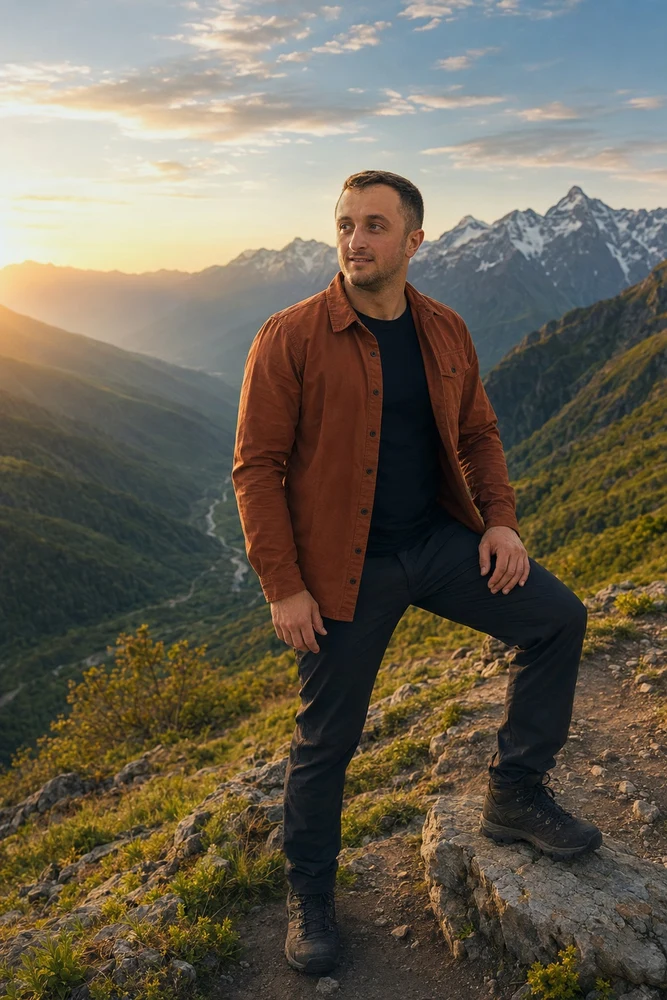

Персональные тренировки
Индивидуальные занятия в Оренбурге, постановка техники и программа под твой уровень.
Узнать условия ↗ПЕРСОНАЛЬНЫЙ ФИТНЕС-ТРЕНЕР · ОРЕНБУРГ
Помогу снизить вес, набрать мышечную массу, стать сильнее и выносливее. Индивидуальный подход, тренировки и питание под твои цели и образ жизни.
НАПРАВЛЕНИЯ РАБОТЫ
ОБО МНЕ
Фитнес-тренер, наставник
по тренировкам и питанию
Спорт — часть моей жизни с детства. Моя цель — помочь тебе не просто тренироваться, а стать сильнее, выносливее и увереннее в себе. Подбираю нагрузку и рекомендации по питанию под твой образ жизни.
03 / ФОРМАТЫ

Индивидуальные занятия в Оренбурге, постановка техники и программа под твой уровень.
Узнать условия ↗
План тренировок, обратная связь и корректировка программы дистанционно.
Узнать условия ↗
Разбор рациона и практические рекомендации с учетом цели и образа жизни.
Узнать условия ↗Стоимость и доступность форматов уточняются индивидуально.
04 / КАК МЫ РАБОТАЕМ
Обсуждаем цели, опыт и ограничения.
Подбираем подходящий формат и нагрузку.
Работаем над техникой и регулярностью.
Отслеживаем изменения и корректируем план.
05 / РЕЗУЛЬТАТЫ
ОТЗЫВЫ
БЛОГ
Начни с посильной нагрузки и постепенно увеличивай ее. Регулярность важнее максимальной интенсивности.
Учитывай цель, разнообразие рациона и достаточное восстановление.
06 / ВОПРОСЫ
Да. Программа подбирается с учетом текущей подготовки и индивидуальных ограничений.
Дистанционный формат предусматривает индивидуальный план и обратную связь. Детали согласуем при знакомстве.
Стоимость зависит от формата и количества занятий. Актуальные тарифы будут добавлены на сайт.
Цель — подобрать реалистичные привычки питания, которые подходят твоему образу жизни.
07 / ПЕРВЫЙ ШАГ
Выбери цель и подготовь сообщение для знакомства с тренером.
Оренбург · Контакты и социальные сети будут добавлены.